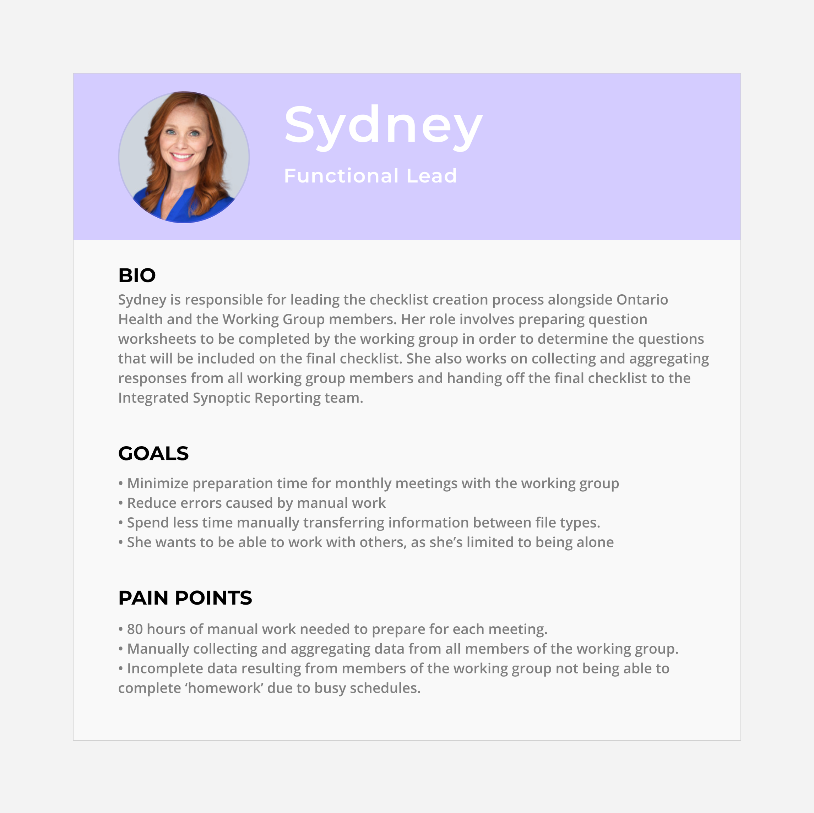
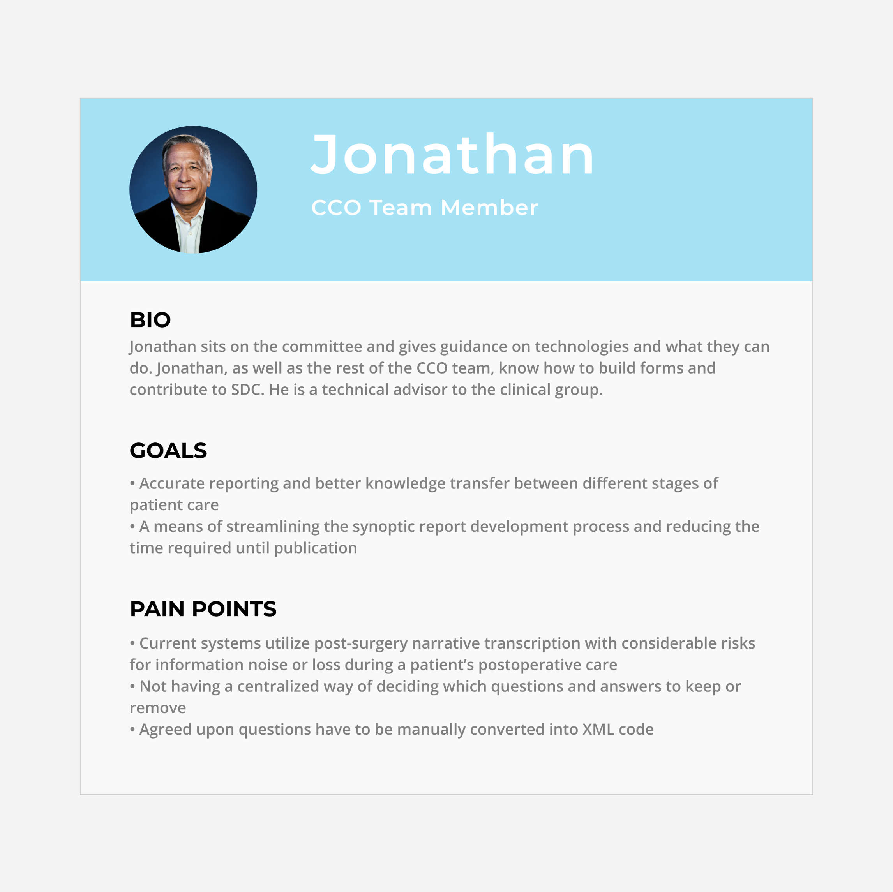
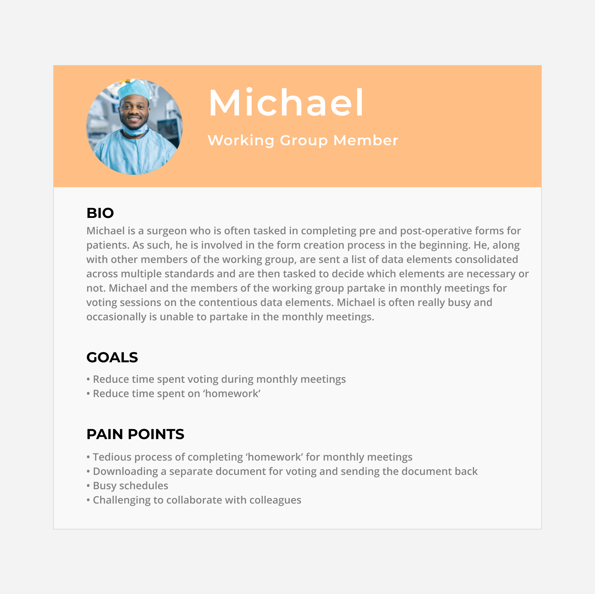
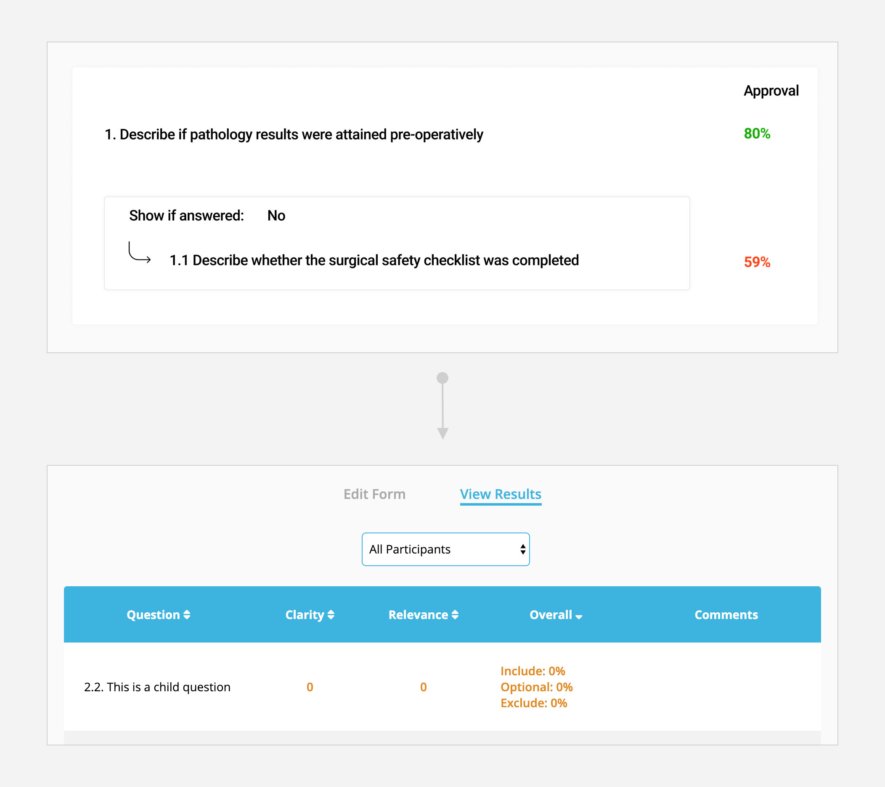

Improving the Synoptic Report Development Process
Engineering Capstone
Role: UX Designer
Timeline: Sept 2019 - Apr 2020
Team: Max (me), Fawzi Ammache, Adham Zaki, Daniel Yong
As part of my final-year engineering capstone, I worked in a team of 4 with our client, Cancer Care
Ontario (CCO), to help them improve a lengthy report development process. Over the course of 8-months,
we worked closely with CCO on researching this problem and ultimately delivered a web-app that would aim
to improve adoption of synoptic reporting across healthcare facilities in Ontario.
The Process
The Importance of Synoptic Reporting
Within the healthcare system, each healthcare facility uses reports to detail information following a
medical treatment. However, when comparing multiple healthcare facilities (i.e: hospitals), each one has
their own way of reporting information, even if the treatment(s) were identical. Depending on the
physician or the hospital, each report can be filled out in a multitude of ways, a popular choice being
voice transcription. Although the method of filling out these reports doesn't matter when it's a quick
single visit, this does become a problem with chronic diseases such as cancer. With treatments that can
last years, consistency among
medical reports is important, especially considering that these reports often need
to be transferred across hospitals for continuing care.
This is where synoptic reporting would come in.
Synoptic reporting is a standardized way of capturing patient data through structured checklists. The
way these fit-in to the healthcare system, is that by having each healthcare facility report to a single
set of reporting standards, every patient's records become consistent. This becomes important as they're
used to help ensure consistency, more accurate reporting with reduced omissions and better knowledge
transfer — all of which
are crucial when dealing with chronic diseases. From here, the benefits would trickle down to the
patient, in which all of their medical history is kept consistent, and there is no worry when
transferring to different facilities or physicians.
Problem Solved? Not Quite
Despite its benefits, there's a huge barrier to widespread adoption of these reports, and that is
time. On average, it takes about 12-months to create each of these synoptic reports due
to the coordination required amongst multiple teams, as well as its largely iterative nature.
Each synoptic report is unique and initially starts off as hundreds of questions for
information that
could be gathered from patients. As this isn't ideal, the CCO team must work closely with a
large team of clinicians, called the Working Group, to make the reports concise and
ensure that each question on the report is necessary. As the Working Group can reach up to 30
clinicians, it's difficult to have a consensus on every question, leading the team to vote and hold
monthly meetings to ensure each question has above a 60% majority vote.
To help address this problem of time, my team and worked with that development team to determine any
bottlenecks that may be slowing down the process. My role throughout this engagement was largely in
research, however also delving into sketches and final designs.
Involved Stakeholders
The first few months involved a lot of exploration and understanding the context (which I shortened down
to a few paragraphs above). In addition to the CCO team, there was a Functional Lead that worked
parallel to them, as well as a team of clinicians (the Working Group) who are all instrumental in the
development
of these synoptic reports.
We started by holding interviews with members of the team, which I led. I first started with the
Functional Lead, due to our perception of her involvement with the process, which we later confirmed and
thus found her to be our primary stakeholder.
— The Functional Lead
We discovered that the Functional Lead was involved throughout the entire iterative process, and worked closely with clinicians to vote on which questions were to be present in each report. We found her work to be very manual as she gathered questions from different reporting standards in Excel, converted them to Word for clinicians to vote on, then converted back to Excel to calculate the voting results.
— A Member of the CCO Team
We found that these roles oversaw the entire process and worked to gather standards towards the beginning of each report development phase, and also work on launching the final report. Towards the launch, members of the CCO team would be required to encode the report into XML to be able to digitize it (a large work effort, that we discovered).
— A Clinician in the Working Group
With this user group, we found that they were primarily involved in the voting process. We discovered that they weren't super tech-savvy and thus preferred using Word or PDFs to be submit their voting results; as mentioned, this made the Functional Lead's job a bit lengthier.
The Current Journey
After identifying who was involved, we worked together to map out what a journey to develop a single
report was like. As mentioned, the process would be kicked off by members of the CCO team as they
gathered the relevant stakeholders and other requirements. The entire second phase would be iterated
between the Functional Lead and the Clinicians in an effort to arrive at a finalized list of questions.
Towards the end, a member of the CCO team would take that list an encode it into XML to be created into
a digitized report.
Though we identified these 3 primary phases of the journey, we saw the most opportunity within the
latter 2, stemming from the manual efforts and the different file formats.
Identifying Main Bottlenecks
After analyzing the journey, and presenting this in detail back to the team, we identified 3 main
bottlenecks that had high-potential for slowing down this process. For each bottleneck, we wanted to
ideate how we could potentially solve this problem.
— Cluttered Sources of Information
Currently, the Functional Lead is solely responsible for transferring information between multiple file
formats. As the process is very "waterfall", it can lead to a lot of time lost.
Our plan: We wanted to maintain a single format, and go digital. This would help keep
everything in the cloud, and resolve any issue relating to handling different file types.
— Manual Data Aggregation
As each clinician individually sends their results in their own file format, the Functional Lead must
wait on them to receive all the data, convert it, and then calculate the results. If a question doesn't
have at least a 60% vote majority on it, meetings are set up to vote again (and the process continues).
Our plan: We wanted to automate this process as we knew that question lists could be in
the hundreds.
From here, we thought about somehow connecting a digital voting screen for clinicians, to an aggregated
data view for the functional lead.
— Manual Conversion to XML
When the question list is finalized, it's manually converted into XML by a member of the CCO team; the
resulting XML file is then developed into a final
report.
Our plan: We also wanted to automate this process and have the XML developed as the
report is voted
on/being created
digitally.
Sketching
To kick-off our formal design process, the 4 of us ran a Crazy 8s exercise to visualize a bunch of our ideas. Through this, we came upon the idea that the Functional Lead would (1) have a single dashboard to create and send off forms to clinicians and (2) be able to view voting results for each form. Clinicians would then be involved upon receiving a link through an email that would take them to a single-page voting screen, which they could submit after completion.
Initial Iterations
We iterated on our sketches and arrived at a single idea, which was a web-app that the Functional Lead
would use to create forms, and also view voting results.
Edit Form Screen — Functional Lead
This screen would be the first screen the Functional Lead sees when either creating a new form or editing an existing one. Working with her, we knew that the reports required Text, Checkboxes and Radio answer types, in addition to nesting and logic for certain questions. For visualizing child questions, we wanted to employ visual cues such as indenting the question, creating a box outline and adding an arrow for redundancy, rather than having the user read the content to determine it was a child question.
View Results Screen — Functional Lead
This screen would closely follow the layout of the previous screen, however focus on the voting results. Again, we used colour to make questions stand out such as green for approved questions, and red for contentious questions (41-59% majority vote).

Voting Screen — Clinician
With this screen, we wanted to minimize the number of interactions. Again, we knew this group wasn't tech savvy, so we had to see what we could try before testing to validate any assumptions. We placed the questions on the left, overtop the white background to place focus on the questions, whereas the voting area was on the right in the grey. We also heard that these users typically wrote comments when working with Word documents, therefore we implemented a comment icon to the right.

Usability Testing with Stakeholders
After completing the prototypes, I worked on the testing protocol and subsequent interview for both the
Functional Lead and our clinicians. Due to their schedules, we were lucky that we even got 4 clinicians
to test with, even though they were all over a video call (the Functional Lead being in-person).
We knew that with our small testing group, we had to focus on percentages to quantify our usability
issues. We quantified them, in terms of criticality, to be High (75% or more of users reported this
issue), Medium (50-75% of users) and Low (less than 50% of users).
After doing our testing, we found an overwhelming amount of issues reported from the Clinician side,
something we had to investigate further.
Resulting Design Changes
Based on the issues we identified following our testing, we revisited the design and implemented our
design changes.
The Functional Lead
A critical usability issue we found was that clarity and relevance scores weren't shown when looking at the results. Our team found out that those were crucial in determining whether a question was to be included or not in the final report. With our design change, we can see those values beside the overall rating.

A Clinician in the Working Group
The rest of the design changes come to the clinicians' view.
Background Colours
During testing, we found that most clinicians went straight for clicking around on the left side of the
screen, being the questions, rather than the right side, being the voting. After conducting our exit
interviews, we attributed this to the background colours as grey typically symbolizes an inactive
element. We swapped the colours, as a result.
Including Instructions
We heard from both the Functional Lead and the clinicians that instructions are an important part to
help clinicians complete their voting, depending on the type of report; we didn't have this included in
our designs. Currently, any important
information is thrown into the Word document or the email, therefore we added this section to the top of
the voting page for visibility.
Save Button and Progress Indicator
From the testing, we heard a few clinicians ask about how they would be able to save their progress and
come back to complete the voting at a later time, something they are used to doing with Word. Similarly,
we heard one clinician mention they would need to see a progress indicator to determine how many
questions they would be required to vote on; this information is typically sent by the Functional Lead.
We added the save feature to improve usability for the clinicians, and the progress indicator to reduce
manual efforts for the Functional Lead.
Opting Out
We heard from one clinician, that sometimes, the questions in the report (on Word) do not apply to them
or their field of expertise, therefore they choose to opt out. We later confirmed this with the
Functional Lead. With the possibility of up to 30 people working on a given report, we included this
option. Clicking on the opt out would grey-out the entire box to better showcase that the question is
in-fact opted out.
Final Design
We iterated a final time and then worked on the actual web-app to deliver to CCO towards the end.
Walking through our designs, we have the following.
Creating and Editing Forms
Knowing that the Functional Lead was more tech-savvy than we initially thought, we worked on making the design more simple by clearing up the clutter from the original. The round buttons for child questions will now show on hover of the parent questions, rather than all the time and child questions are simply displayed through the numbering, rather than the redundancy of the box, arrow and numbering.
Sharing Forms to Clinicians
After creating a report, the Functional Lead would be able to email clinicians unique links to access their own voting. From here, she can choose to copy the link, or simply click to send the email for that specific clinician. For instructions, we added a text-box so the Functional Lead can add anything clinicians need to know on to the voting page.
Voting for Clinicians
Instructions for each clinician were added at the top of the page, above the voting criteria, for easy visibility. As we changed the background colours, we made it much clearer that the right side is meant to be interacted with. We also worked on making the comment boxes more explicit, as we heard that the original looked like a "live-chat" icon.
Reviewing Voting Results
From the comments from the Functional Lead, we added the clarity and relevance categories to help her better determine contentious questions. We also worked on adding some of her missed Excel functionality, such as sorting and filtering, to help her work just as quick as she did in the past.

What I Learned from this Project
Though this wasn’t the first time I have worked directly with clients, it taught me a lot about the
current state of Canadian healthcare. Realizing that many healthcare institutions opt for more
traditional methods of recording data can really set back the experience that patients face. It makes me
recognize that healthcare is one sector where UX and other forms of design can make a huge difference to
those involved both directly and indirectly.
Starting off with the research, I was overwhelmed with the amount of problems that CCO faced in their
line of work. This led us to being unsure about the scope as we were typically used to problems being
handed to us, along with a clear expectation of the final outcome(s). The discovery of the main pain
points required a lot of deliberation between us, and everything had to be considered to ensure we could
actually deliver something within our limited time-frame; lots of scope narrowing and refinement had to
be done.
Looking at the design process, I found that small details in the prototypes were often crucial,
especially when working with people as meticulous as doctors. I learned from our mistakes of using Lorem
Ipsum for filler text because doctors became confused as they have never been exposed to that. In
addition, some of our prototypes looked realistic to the point that it was difficult for some
participants to discern whether it was a real.pngage or not; this caused a few technical difficulties
throughout the sessions. Going forward, I found it to be important to cater to your audience when
designing and when presenting designs (even if they’re prototypes), as this may affect the research and
results you’re gathering.